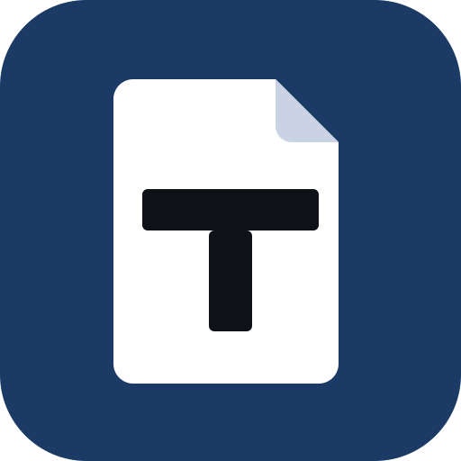

Tarjo Entrar Agendar demonstraçãoO Tarjo localiza CPF, nome, endereço, rosto, assinatura e QR Code nos documentos que o órgão precisa publicar. Sua equipe confere, e o arquivo sai limpo, pesquisável e com laudo assinado.
O conteúdo sob a tarja é apagado do arquivo, inclusive desenhos e imagens. Antes de liberar o PDF, o Tarjo tenta extrair cada dado removido e avisa se algum aparecer.
Cada arquivo sai com um laudo que registra o hash do original e do tratado, o que foi removido e quem aprovou.
A detecção roda no servidor do órgão ou na nuvem do Tarjo, sem serviço de terceiros. Nenhum documento é usado para treinar modelos.
Pela tela, pela API, em lote ou direto do Drive e do OneDrive. Documentos digitalizados são endireitados e passam por OCR automaticamente.
As tarjas chegam sugeridas, cada uma com o motivo da marcação e a pessoa a que pertence. A equipe confirma, descarta ou aplica a todo o documento.
O Tarjo remove, verifica e gera o PDF ou PDF/A com o laudo. O arquivo pode ser baixado, enviado por e-mail ou publicado em link com prazo de validade.
Dez verificações executadas no nosso servidor com documentos fictícios. Cada teste mostra o resultado na hora.
| Teste | O que verifica | |
|---|---|---|
| V1 | Contexto. Remove o endereço da pessoa e mantém o do órgão. | |
| V2 | OCR. Encontra dados em documento digitalizado, sem texto. | |
| V3 | Imagem. Tarja rosto, QR Code, assinatura e tatuagem. | |
| V4 | Revisão. Confirmar, descartar e tarjar manualmente. | |
| V5 | Irreversibilidade. Nenhum dado removido pode ser recuperado. | |
| V6 | Regras. Aplica expressões e listas definidas pelo órgão. | |
| V7 | API. Envio, consulta e download com chave de acesso. | |
| V8 | Desempenho. Trata um processo de 105 páginas. | |
| V9 | Publicação. O portal só recebe a versão tratada. | |
| V10 | Lote. Trata uma pasta inteira de uma vez. |
Essencial R$ 1.490/mês |
Órgão R$ 3.490/mês |
Federal R$ 5.400/mês | |
|---|---|---|---|
| Páginas tratadas por mês | 10 mil | 50 mil | 150 mil |
| Usuários | Até 3 | Ilimitados | Ilimitados |
| Revisão, laudo assinado, PDF/A e links | Incluído | Incluído | Incluído |
| API, lote, publicação automática e extensão | — | Incluído | Incluído |
| SSO (Entra ID, SAML, LDAP) e nuvem | — | Incluído | Incluído |
| Instalação no servidor do órgão | — | — | Incluído |
| Suporte | Horário comercial | 8×5 com SLA | SLA 1h/4h · 99,5% |
| Falar com a gente | Pedir proposta | Falar com a gente |
Páginas além da franquia só com autorização prévia: R$ 0,04 por página, em pacotes de 25 mil.
Entregamos a declaração do fabricante, a demonstração técnica e a justificativa de preço.
Contratação direta dentro do limite anual, para os planos Essencial e Órgão.
A ata do primeiro órgão que licitar fica aberta à adesão dos demais.
Traga um processo real: tarjamos na hora, no ambiente de homologação, e você leva o laudo.